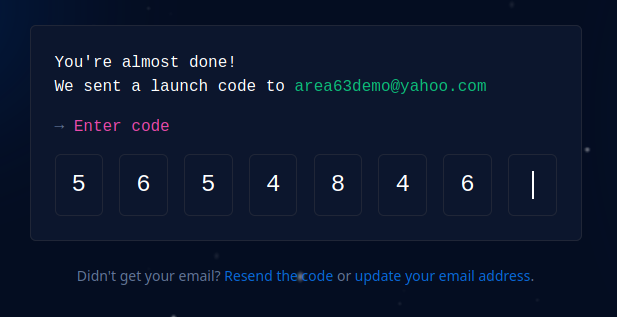
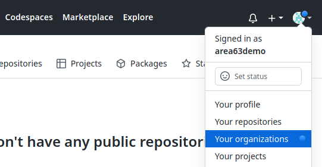

Using GitHub¶
GitHub is VCS platform that is used by many Open Source projects, made from teams of people from around the globe.
Register an Account¶
In order to be granted access to make any changes, you must create an account.
Open https://github.com and click
Sign up:Provide basic account information:
Check email and provide the temporary token:

Either provide demographic information or click
Skip personalization:
At this point, your account has been created and is ready for use.
You can now contact anyone in charge of the website you would like to help with and provide your account name with a request for access.
Automatic Forks¶
If you have not been provided access to a project and attempt to make changes on a website, GitHub will automatically create a Fork. This simply means your account now owns a copy of the project, which means you are free to make any changes to your copy.
After making changes to this copy, you can create a Pull Request, which just means you would like the main project to “absorb” your changes. GitHub provides a web interface for this which is documented on their website.
Responsibility¶
After a project (website) administrator has given you access to their Team,
you will likely be able to make changes directly to the website repository.
NOTICE: Most websites will automatically “build and deploy” (or “publish the changes”) with all file changes. Various safeguards exist to prevent impacting a live/production website–the best safeguard is small/trivial updates that can be easily explained (in the commit title/description).
REMEMBER: We may make mistakes, but we will promptly admit when we become aware of mistakes we have made. We will recognize the earnest effort of others and guide them through mistakes. Open communication will enable us to reach the newcomer.
The Code of Conduct used by this project is offered as a basic template that aims to embody A.A. principles, including respect for others and anonymity.
To accept this responsibility …
Open https://github.com, select your user icon, and select
Your Organizations:
Select
Joinnext to the organization/team you have been invited to:Read through the disclaimer and choose the appropriate option.